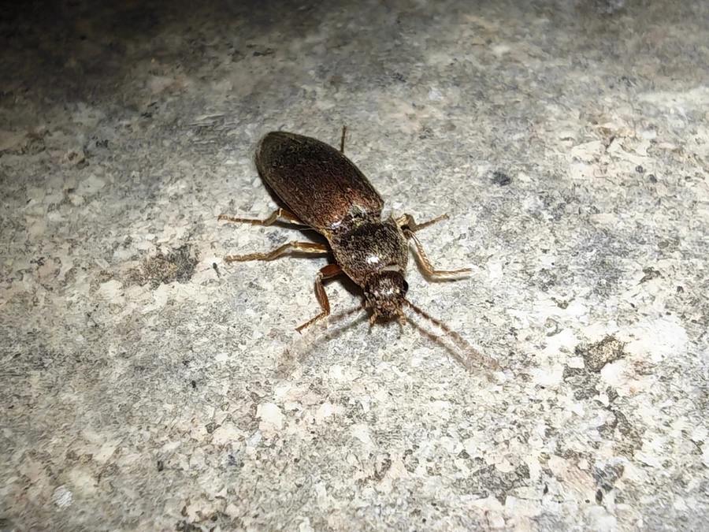

昆虫 · 动物界
沟叩甲 Pleonomus canaliculatus

体黑褐细长的叩甲，幼虫即金针虫，在土中蛀食麦类与玉米根部，是中国北方重要的地下害虫。
- 分类
- 门节肢动物门纲昆虫纲目鞘翅目科叩甲科属叩甲属
- 栖息环境
- 麦田、玉米地、马铃薯田、荒地与田埂土缝
- 地理分布
- 中国北方及朝鲜半岛、日本
- 保护级别
- 常见农业害虫，无保护需求
物种志
沟叩甲的成虫体长约一点五至二厘米，体细长，黑褐至暗褐色，前胸背板后角尖锐，鞘翅上有明显的纵向沟纹，沟叩甲之名由此而来。触角锯齿状，足短。被捉住时，它会把头和胸向后一挺，发出咔的一声弹起，这是叩甲科共有的弹跳本领。幼虫体细长坚硬，呈黄褐色，俗称金针虫。
它分布于中国北方以及朝鲜半岛、日本，栖息在麦田、玉米地、马铃薯田和荒地。成虫在春夏季活动，白天躲在土缝和枯草下，夜间取食嫩芽。幼虫在土中生活两三年，蛀食麦类、玉米的根茎和播下的种子，造成缺苗断垄，是北方重要的地下害虫。防治以轮作、深翻和药剂拌种为主。成虫的弹跳只是翻身逃生，对人并无攻击性。
形态与习性
- 体长约一点五至二厘米，体细长
- 鞘翅具明显纵向沟纹，故称沟叩甲
- 弹跳被捉时挺身弹起，发出咔声
- 幼虫俗称金针虫，黄褐色，体硬
- 危害蛀食麦类、玉米根茎与种子
- 防治轮作、深翻、药剂拌种
趣味知识
- 被抓住时它会咔的一声弹起来，像装了弹簧，这是它逃命的绝招。
- 它的幼虫在土里一住就是两三年，把麦根啃得七零八落。
- 它的名字里有个沟字，说的正是鞘翅上那几道纵沟。